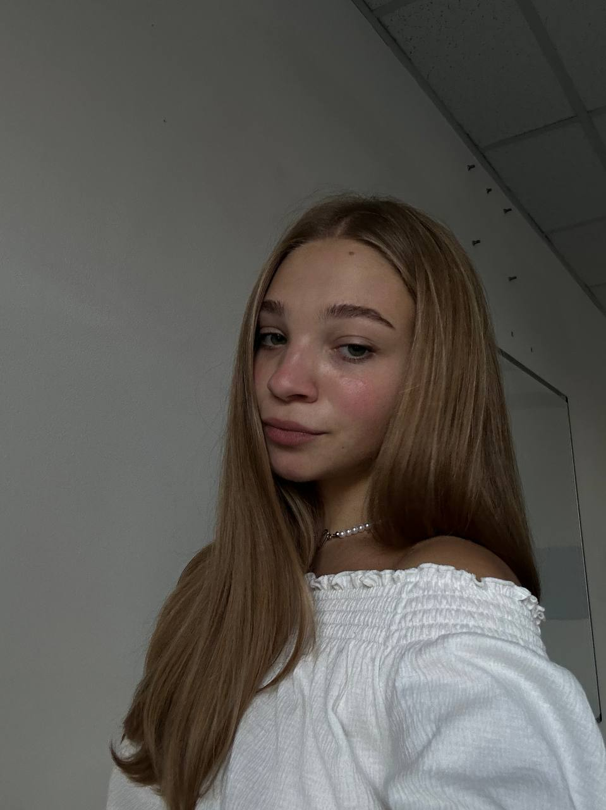

Welcome to My Portfolio
A 3rd year student of International Relations at the National University of Kyiv-Mohyla Academy, an active member of the UN Model Youth Movement, part of the team of KMA Today, the largest news media outlet in Ukraine, and a member of the youth NGO Prosvita.
